Generates plots for mlr3::TaskRegr, depending on argument type:
"target": Box plot of target variable (default)."pairs": Passes data and additional arguments down toGGally::ggpairs(). Color is set to target column.
# S3 method for TaskRegr autoplot(object, type = "target", ...)
Arguments
| object | |
|---|---|
| type | (character(1)): |
| ... | ( |
Value
ggplot2::ggplot() object.
Examples
library(mlr3) library(mlr3viz) task = mlr_tasks$get("mtcars") task$select(c("am", "carb")) head(fortify(task))#> mpg am carb #> 1: 21.0 1 4 #> 2: 21.0 1 4 #> 3: 22.8 1 1 #> 4: 21.4 0 1 #> 5: 18.7 0 2 #> 6: 18.1 0 1autoplot(task)